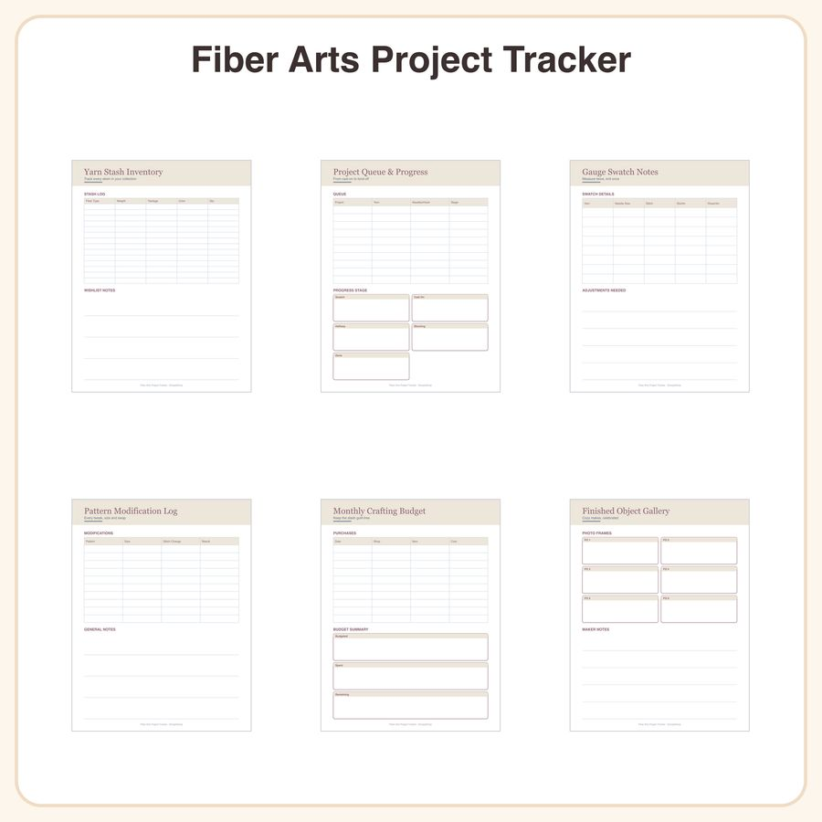

$4.99
View on EtsyFinally finish what you start! This printable Fiber Arts Project Tracker helps knitters and crocheters organize their stash, track WIPs, and log every finished object — no more forgotten yarn shoved in a bin. Design style: clean, minimalist tables with simple serif headers. No illustrations, doodles, or decorative motifs — just an organized, professional layout that's easy to read and quick to fill in. What's included (7 pages): • Yarn stash inventory — columns for fiber type, weight, yardage, and color • Project queue & progress tracker — table format to mark each project's stage • Gauge swatch notes page — grid boxes for swatch measurements • Pattern modification log — track size and stitch changes • Monthly crafting budget page — simple table layout • Finished object gallery log — entry boxes for photos and notes • Cover page File details: • PDF, US Letter and A4 sizes included • Print at home or at a copy shop • Fill in by hand, or use with GoodNotes/Notability on tablet How to use: Download, print, and start tracking your yarn projects immediately. Digital users can type or write directly on the pages in your favorite annotation app. License: For personal and small-business use (up to 500 printed units). Please don't resell or redistribute the files themselves. Honest note: These designs were created by our shop with the help of AI tools.